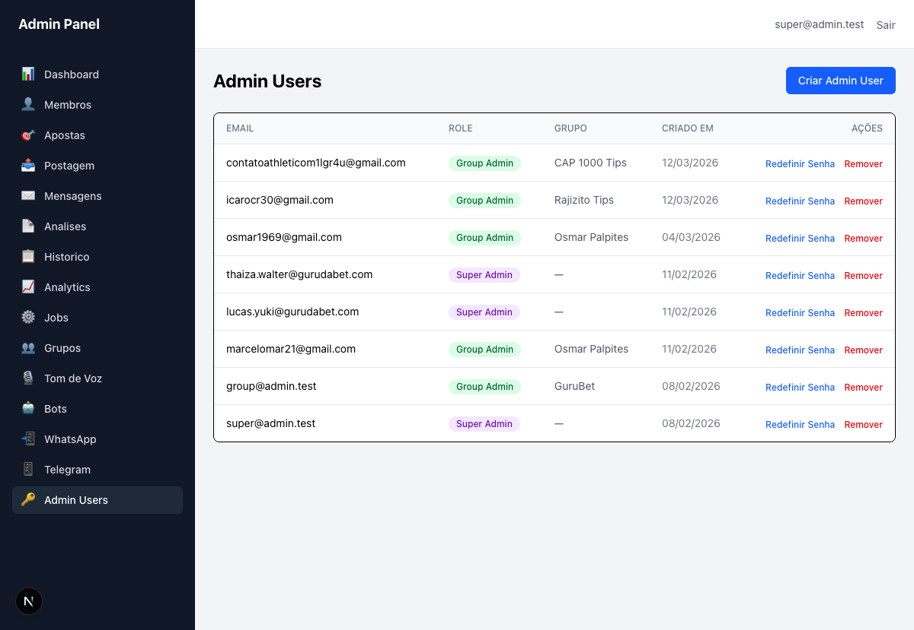
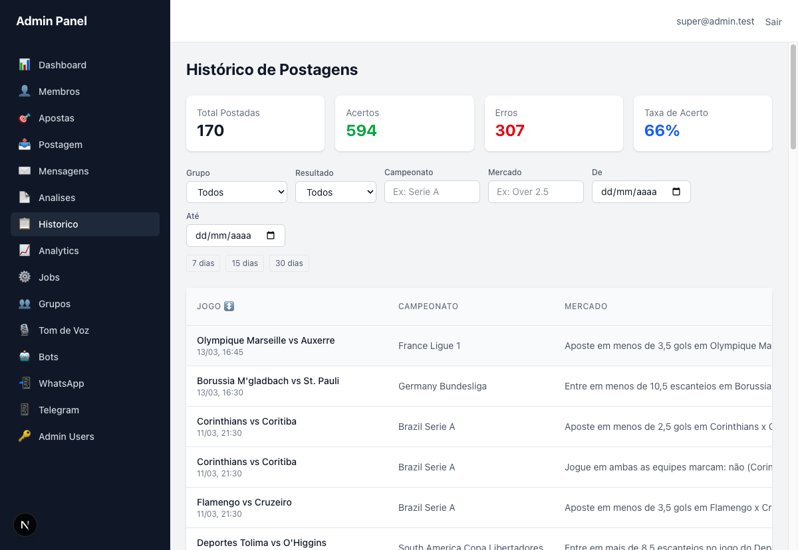
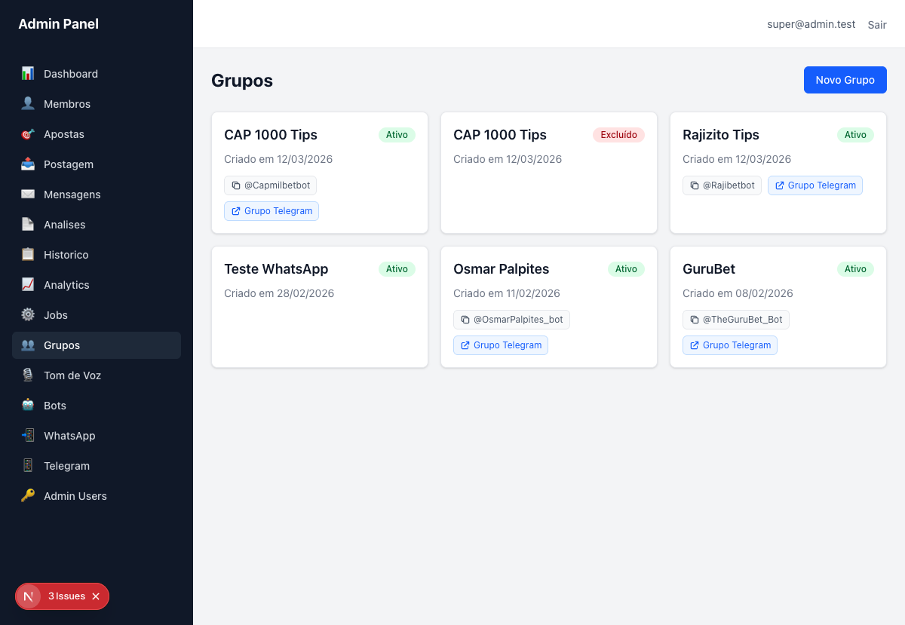
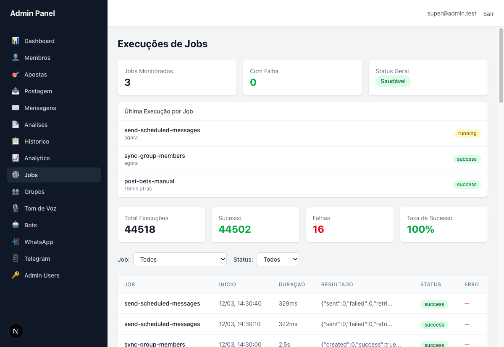
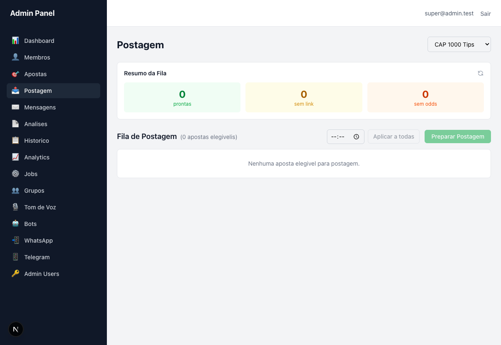
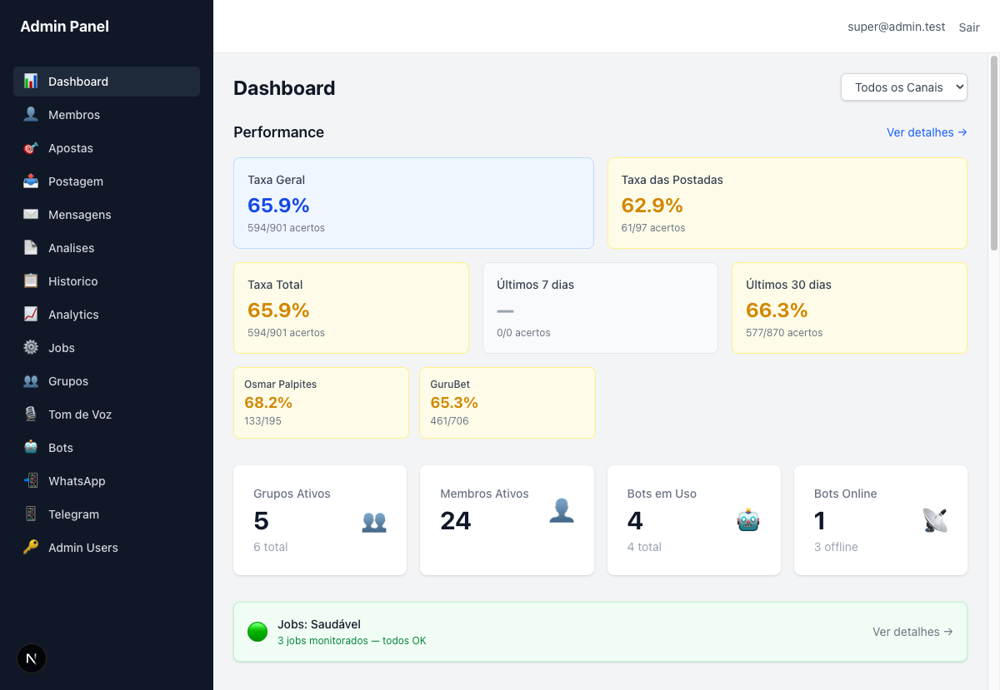
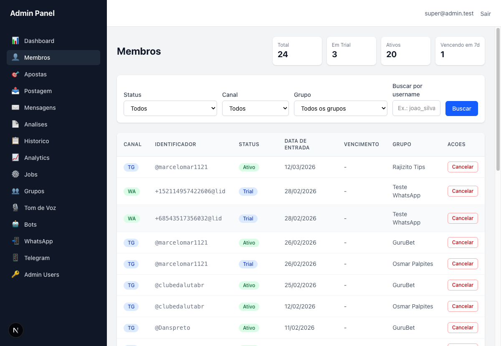
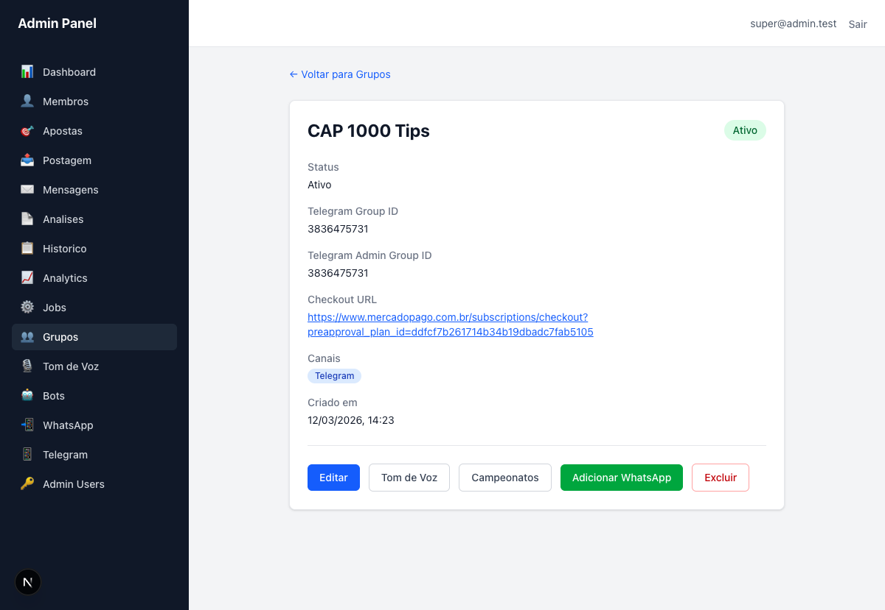

O usuario icarocr30@gmail.com existe na tabela admin_users como
Group Admin do grupo Rajizito Tips (criado em 12/03/2026),
porem o login retorna "Email ou senha invalidos".
Credenciais testadas: icarocr30@gmail.com / XNvsVZAzn5$
Evidencia

Sugestao de Fix
auth.users)
alem da tabela admin_users. O fluxo de onboarding "Criar Admin User" pode estar
inserindo na tabela customizada sem criar o usuario no Supabase Auth via
supabase.auth.admin.createUser(). Checar a API route POST /api/admin-users.
O cabecalho mostra "Total Postadas: 170" mas "Acertos: 594" e "Erros: 307" (total 901). Os contadores estao incluindo apostas do pool inteiro, nao apenas as 170 postadas.
Alem disso, ha discrepancia com Analytics que mostra "Taxa das Postadas: 62.9% (61/97)", sugerindo que apenas 97 apostas postadas tem resultado, nao 170.
Evidencia

Sugestao de Fix
/api/posting-history deve filtrar por bet_status='posted'
ao calcular acertos e erros. Reconciliar os numeros entre Historico (170 postadas) e
Analytics (97 postadas com resultado).
A pagina /groups gera 3 erros de console ao carregar:
Isso indica HTML invalido que causa mismatch entre SSR e client rendering. O Next.js badge "3 Issues" aparece no canto inferior da tela.
Evidencia

Sugestao de Fix
<Link> (que renderiza <a>) e dentro
deles ha <button> e <a> (Grupo Telegram, @bot). Em HTML,
um <a> nao pode conter outro <a> ou interactive content.
onClick + router.push() no card wrapper em vez de
<Link>, ou extrair os botoes/links internos para fora do card linkavel
usando e.stopPropagation().
Jobs mostra "Taxa de Sucesso: 100%" mas existem 16 falhas em 44.518 execucoes. A taxa real seria ~99.96%.
Evidencia

Sugestao de Fix
Math.floor() ou exibir com mais casas decimais para nao
arredondar para 100% quando ha falhas. Ex: "99.96%" ou "99.9%".
O dropdown de grupo na Postagem inclui "CAP 1000 Tips" que tem uma versao excluida. Nao ha filtragem de grupos deletados.
Evidencia

Sugestao de Fix
status='deleted' dos dropdowns de selecao.
Aplicar em todas as paginas que listam grupos (Postagem, Historico, Analytics, etc.).
O card "Ultimos 7 dias" mostra "0/0 acertos" com indicador "---". Apostas foram postadas nos ultimos dias (11/03), entao deveria haver dados.
Evidencia

Sugestao de Fix
bet_result='pending'
e a query filtra pendentes. Se intencional, mostrar "Sem resultados ainda" em vez de
"---". Verificar tambem se o filtro de timezone esta correto (BRT vs UTC).
O job send-scheduled-messages executa a cada ~30 segundos, gerando
44.518 registros (891 paginas). A maioria retorna {"sent":0,"failed":0}.
Sugestao de Fix
O heading mostra "(0 apostas elegivelis)" em vez de "(0 apostas elegiveis)".
Evidencia
Sugestao de Fix
Membros WhatsApp mostram +152114957422606@lid em vez de numeros formatados.
Evidencia

Sugestao de Fix
@lid e aplicando mascara de telefone.
Se o JID for um Linked ID (nao telefone), exibir label amigavel.
Quase todos os membros ativos mostram "-" na coluna Vencimento. Apenas 1 membro tem data real (13/03/2026).
Sugestao de Fix
subscription_end_date esta sendo populado pelo webhook
do Mercado Pago. Ativacoes manuais podem nao definir data de vencimento.
"CAP 1000 Tips" aparece duas vezes - Ativo e Excluido - sem diferenciacao suficiente.
Sugestao de Fix
Detalhe do grupo CAP 1000 Tips mostra Group ID e Admin Group ID ambos como
3836475731. Normalmente devem ser grupos Telegram separados.
Evidencia

Sugestao de Fix
Textos na coluna Mercado sao cortados sem tooltip para ver o texto completo.
Sugestao de Fix
title attribute com texto completo ou permitir expandir ao clicar.